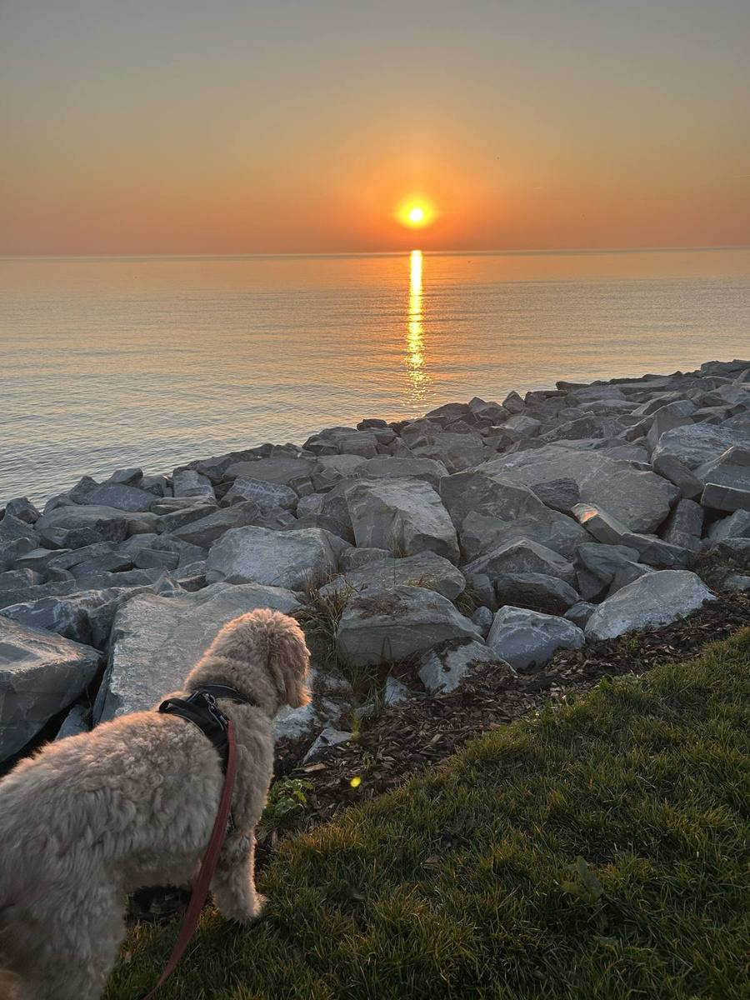

Maybe you know that box.
You run a small business. You are good at what you sell. You want to look at your own numbers and understand them. Instead, you avoid the spreadsheet.

“In my first year as a bookkeeper, a florist brought me a shoebox of receipts on 29 April, two days before her tax deadline. She cried at my desk.”
A bookkeeper, remembering
You run a small business. You are good at what you sell. You want to look at your own numbers and understand them. Instead, you avoid the spreadsheet.
She knew the florist was not bad with money. Nobody had ever shown her a spreadsheet slowly. That shoebox is why Priya started Spreadsheets Without Fear. She has been a bookkeeper for 12 years.
Since March 2025, four groups have taken the course: 71 people. 52 answered a survey afterwards. 44 said they now update their own numbers every week. 39 said they had stopped sending their receipts to someone else to sort.
The receipts stay in the box. The end of the month stays something you dread.
“I used to dread the end of the month. Now it takes me twenty minutes on a Sunday.”
Marta, a past student who runs a two-person cleaning company
